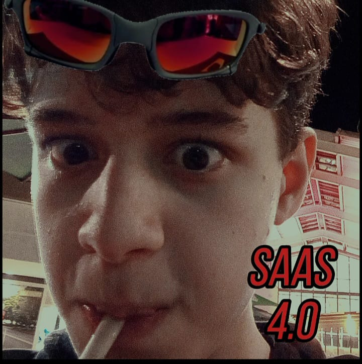

Devoradores
Texture-Packs

Texture-Pack Saas 4.0
Textura composta por memes e coisas aleatorias direto do ano de 2020, essa textura, tem como essencia o shitpost e memorias do colégio. Itens foram alterados, molduras, discos de musica e outros aspectos para deixar a textura o mais nada haver possível. Textura desenvolvida por Nosck.
Download Texturepack